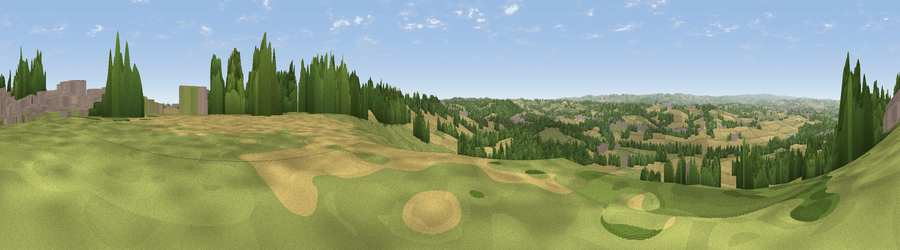

Viewpoint near Palterton
#14248 in England · top 10% of its area beats it · near PaltertonThe view, rendered

A 360° render of this exact spot computed from the terrain model, tree cover and land cover — summer colours, afternoon light, calibrated against photographs of famous viewpoints. Real trees, hedges and buildings will differ in detail.
The panorama
Grey silhouette: terrain skyline in each direction (720 bearings, Earth curvature and refraction included). Dashed green: skyline with trees (+15 m) and buildings (+8 m) as obstacles. Blue strip: how far the ground is visible on each bearing.
Where the view opens
Wedge length = distance to the farthest visible ground on that bearing (vegetation-aware). Rings at 10, 25 and 50 km.
What fills the view
47% grassland · 30% cropland · 20% woodland · 3% built-up
Angular shares of the visible panorama (visual magnitude), not map area. Landscape diversity 0.51 (0–1 Shannon).
Key numbers
More beautiful places nearby
The staircase of upgrades: each row has a higher view potential than everything closer. Driving times are estimates from straight-line distance, calibrated against real road routing — check an actual route before setting out.
| Place | Direction | Drive | Score |
|---|---|---|---|
| Viewpoint near Palterton | N · 1 km | ~2 min | 59.9 |
| Viewpoint near Bolsover | N · 3 km | ~7 min | 60.4 |
| Viewpoint near Meden Vale | ENE · 10 km | ~20 min | 65.2 |
| Viewpoint near Alton | WSW · 12 km | ~23 min | 67.7 |
| Viewpoint near Brackenfield | SW · 14 km | ~26 min | 68.3 |
| Burstheart Hill [Thoresby Colliery] | E · 16 km | ~28 min | 69.3 |
| Crich Stand | SW · 18 km | ~31 min | 73.0 |
| Alport Height | SW · 23 km | ~39 min | 73.9 |
53.20674, -1.29215 · source: screening · position refined by local search. Computed location — check access rights before visiting.